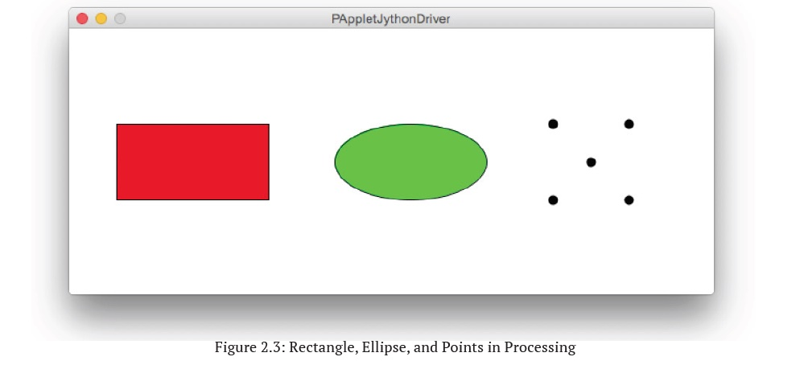
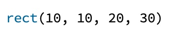
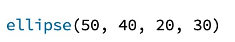

Processing provides several other commands for drawing two-dimensional shapes. These are just a few examples.


The rect command, as you might expect, draws a rectangle on the canvas. Again, Processing needs to know more details about the rectangle, like the numbers to know where to draw it and how big it should be. The first two numbers specify the (x, y) coordinates of the upper left corner of the rectangle, and the second two numbers specify the width and height of the rectangle in that order. It might occur to you that there are other ways to describe the size and location of a rectangle, and indeed, Processing lets us use some of these different ways if we want.

We can draw ellipses as well. In this case, the first two numbers specify the (x, y) coordinates of the center of the ellipse and the next two numbers specify its width and height, respectively. If the width and height are equal, then we get a circle.
The point command draws a single point on the canvas. Since the point’s size is fixed at one pixel, we only need two numbers to describe the point, and these are its (x, y) coordinates.